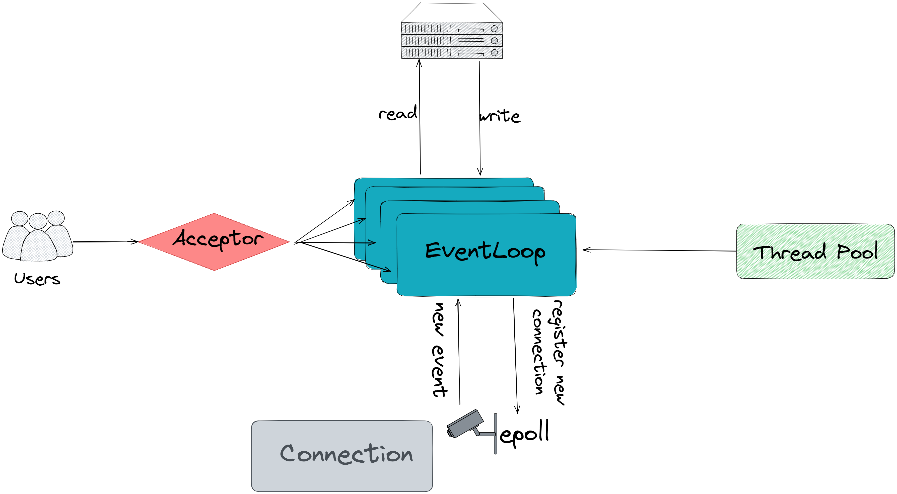

轻量级高并发网络库+httpserver
本文最后更新于：1 分钟前
本博客部署在两个服务器上，其中一个的 HTTP 服务就是由本文介绍的 FalconLink 提供。你可以通过IP地址 121.4.49.170:8090 尝试访问。 项目地址 https://github.com/caaatch22/FalconLink
Overview
FalconLink是一个轻量级的高并发网络库。它封装了网络编程套接字API，将其抽象成一个易用，可拓展框架。用户只需通过设置回调函数的形式注入业务逻辑。它同时也具有 HTTP 服务请求与解析的功能。

上图是FalconLink系统架构的一个简单概括性图示。
- 采用非阻塞socket配合边缘触发，及one loop per thread的主从
reactor设计 Acceptor是专门用于处理接受新用户连接请求的模块。它守候在监听端口。收到请求后建立Connection分配给 EventLoop。- FalconLink 将每个 TCP连接抽象成一个
Connection，一个Connection对应一个连接 socket 套接字。用户可以为每一条Connection注册回调函数。 - 每个
EventLoop都拥有一个Poller。Poller负责监听已连接的套接字，将有事件触发的连接反馈给EventLoop。 EventLoop是该系统的核心组件, 每个都单独运行在一个线程中. 它从Poller中接收到有事件触发的用户连接后, 会获取并执行它们的回调函数.ThreadPool线程池管理着系统中有多少个EventLoop在运行，并调度线程，防止注册过多线程导致性能下降。- 支持 HTTP(GET,HEAD)请求的解析与回复，支持挂载静态 html 文件（本博客使用FalconLink的 HTTP 服务）
API
使用falconlink，可以轻易且优雅的在20行内实现一个echo server。
1 | |
Build & Test
将代码 clone 到本地，进入主目录
1 | |
http service
你可以进行使用 falconlink 搭建自己的 http 服务器。
在 build 目录下 make http_server，然后运行
1 | |
你可以替换自行http_resource中的文件，并在浏览器中输入localhost:{port}查看
Benchmark
使用 webbench进行压力测试
1 | |
-
硬件:
- Intel® Xeon® Gold 6148 CPU @ 2.40GHz
- OS:Ubuntu 20.04 LTS,
- 4 核 CPU， 16GiB内存， 100GiB磁盘存储。
-
QPS: 40K
本博客所有文章除特别声明外，均采用 CC BY-SA 4.0 协议 ，转载请注明出处！